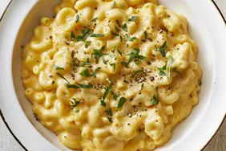

Macaroni and Cheese

Description:
A macaroni and cheese dish that is cheap, tasty, and simple to make.
Ingredients:
- 1 (ounce) box elbow macaroni
- ¼ cup butter
- ¼ cup all-purpose flour
- ½ teaspoon
- ground black pepper to taste
- 2 cups milk
- 2 cups shredded Cheddar cheese
Steps:
- Gather the ingredients.
-
Bring a large pot of lightly salted water to a boil. Cook elbow macaroni in the
boiling water, stirring occasionally until cooked through but firm to the bite,
8 minutes.
- At the same time, melt butter in a saucepan over medium heat.
- Add flour, salt, and pepper and stir until smooth, about 5 minutes.
-
Pour in milk slowly, while stirring continuously. Continue to cook and stir until
mixture is smooth and bubbling, about 5 minutes, making sure the milk doesn't burn.
- Add Cheddar cheese and stir until melted, 2 to 4 minutes.
- Drain macaroni and fold into cheese sauce until coated.
- Serve hot and enjoy!